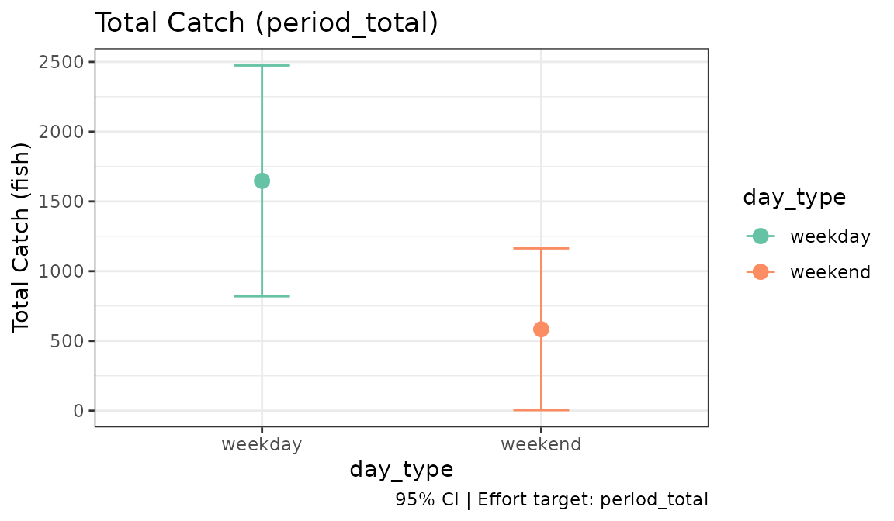

Introduction
tidycreel gives fisheries biologists a tidy, pipe-friendly way to design and analyse creel surveys. You work with the terms used in the field (dates, strata, counts, interviews) without handling the internals of the survey package.
This tutorial analyses one complete season, start to finish. A clerk worked a lake for 120 days, from May 1 to August 28. On 36 of those days the clerk made an instantaneous count of anglers and interviewed angling parties, both those that had finished fishing and some still fishing. The questions are the usual ones: how much fishing happened over the season, how many fish were caught, and how many were kept.
Each answer is built from the one before:
calendar -> design
counts -> effort (angler-hours)
interviews -> catch rate (fish per angler-hour)
effort x rate -> total catch (fish)The season
library(tidycreel)
data(example_season_calendar)
data(example_season_counts)
data(example_season_interviews)
head(example_season_calendar)
#> date day_type sampled
#> 1 2024-05-01 weekday FALSE
#> 2 2024-05-02 weekday FALSE
#> 3 2024-05-03 weekday FALSE
#> 4 2024-05-04 weekend FALSE
#> 5 2024-05-05 weekend FALSE
#> 6 2024-05-06 weekday TRUE
table(example_season_calendar$day_type, example_season_calendar$sampled)
#>
#> FALSE TRUE
#> weekday 58 28
#> weekend 26 8The calendar lists every day of the season, not only the sampled ones, and splits them into weekdays and weekends. The clerk sampled 28 of the 86 weekdays and 8 of the 34 weekend days. That list of every day is what lets tidycreel expand from the days that were sampled to the whole season.
Survey design
design <- creel_design(example_season_calendar, date = date, strata = day_type)
design
#>
#> ── Creel Survey Design ─────────────────────────────────────────────────────────
#> Type: "instantaneous"
#> Date column: date
#> Strata: day_type
#> Calendar: 120 days (2024-05-01 to 2024-08-28)
#> day_type: 2 levels
#> Counts: "none"
#> Interviews: "none"
#> Sections: "none"creel_design() uses tidy selectors, so you name columns
without quotes. The design records the 120-day calendar and its two
strata.
Counts
head(example_season_counts)
#> date day_type total_anglers daylight_hours
#> 1 2024-05-06 weekday 5 14
#> 2 2024-05-07 weekday 5 14
#> 3 2024-05-09 weekday 9 14
#> 4 2024-05-21 weekday 3 14
#> 5 2024-05-22 weekday 7 14
#> 6 2024-06-01 weekend 2 14
design <- add_counts(design, example_season_counts,
count_col = total_anglers,
period_length_col = daylight_hours
)Each row is one instantaneous count: the number of anglers fishing at
the moment the clerk looked. A count is a number of anglers, not an
amount of effort. To turn it into effort, tidycreel needs to know how
much time the count stands for. Here the single count on each day
represents the whole 14-hour fishing day, so daylight_hours
is the period length. Effort for a day is the count times that length,
in angler-hours.
Leaving out period_length_col still gives an estimate,
but its unit is unknown, and estimate_effort() warns that
no period length was supplied. tidycreel derives units from what you
give it and never assumes one.
Effort
There are two different questions you can ask of these counts.
estimate_effort(design)
#>
#> ── Creel Survey Estimates ──────────────────────────────────────────────────────
#> Method: Total
#> Variance: Taylor linearization
#> Confidence level: 95%
#> Effort target: sampled_days
#> Unit: angler-hours
#>
#> # A tibble: 1 × 7
#> estimate se se_between se_within ci_lower ci_upper n
#> <dbl> <dbl> <dbl> <dbl> <dbl> <dbl> <int>
#> 1 3066 386. 386. 0 2282. 3850. 36
estimate_effort(design, target = "period_total")
#>
#> ── Creel Survey Estimates ──────────────────────────────────────────────────────
#> Method: Total
#> Variance: Taylor linearization
#> Confidence level: 95%
#> Effort target: period_total
#> Unit: angler-hours
#>
#> # A tibble: 1 × 7
#> estimate se se_between se_within ci_lower ci_upper n
#> <dbl> <dbl> <dbl> <dbl> <dbl> <dbl> <int>
#> 1 9994. 1286. 1286. 0 7380. 12609. 36The first estimate, the default, is the effort on the 36 days
that were sampled: 3,066 angler-hours. The second is the effort
over the whole 120-day season, about 9,994
angler-hours. That season total is the number usually reported. Each
stratum’s mean daily effort is multiplied by the number of days in that
stratum, then the strata are added. For a season total, ask for
target = "period_total".
The standard error comes from the day-to-day variation among the
sampled days within each stratum. With one count per day the within-day
variation (when in the day each count happened to fall) cannot be
estimated separately, so se_within is 0 as a placeholder,
not because activity was steady through the day. It becomes non-zero
when a day has several counts. With one count per day the standard error
also leaves out the finite-population correction, so it is slightly
conservative; vignette("effort-pipeline") explains why.
Estimates can be broken down by any column in the design with
by:
estimate_effort(design, by = day_type, target = "period_total")
#>
#> ── Creel Survey Estimates ──────────────────────────────────────────────────────
#> Method: Total
#> Variance: Taylor linearization
#> Confidence level: 95%
#> Grouped by: day_type
#> Effort target: period_total
#> Unit: angler-hours
#>
#> # A tibble: 2 × 8
#> day_type estimate se se_between se_within ci_lower ci_upper n
#> <chr> <dbl> <dbl> <dbl> <dbl> <dbl> <dbl> <int>
#> 1 weekday 7912 1063. 1063. 0 5753. 10071. 28
#> 2 weekend 2082. 725. 725. 0 609. 3556. 8The 86 weekdays account for most of the season’s effort, about 7,900 angler-hours to the weekends’ 2,100. Per day, the two are closer: about 92 angler-hours on an average weekday and 61 on an average weekend day.
Interviews
head(example_season_interviews)
#> date day_type interview_id trip_status hours_fished n_anglers
#> 1 2024-05-06 weekday 1 incomplete 1.78 2
#> 2 2024-05-06 weekday 2 incomplete 1.82 1
#> 3 2024-05-06 weekday 3 complete 4.66 3
#> 4 2024-05-06 weekday 4 complete 0.77 2
#> 5 2024-05-07 weekday 5 complete 3.12 1
#> 6 2024-05-07 weekday 6 complete 2.23 3
#> catch_total catch_kept
#> 1 0 0
#> 2 3 1
#> 3 1 0
#> 4 0 0
#> 5 5 0
#> 6 0 0
design <- add_interviews(design, example_season_interviews,
catch = catch_total,
harvest = catch_kept,
effort = hours_fished,
trip_status = trip_status,
n_anglers = n_anglers
)
#> ℹ 153 interviews have zero catch.
#> Zero catch is usual; check it is not missing data recorded as 0.
#> ℹ Added 231 interviews: 172 complete (74%), 59 incomplete (26%)Each row is one party. add_interviews() checks the
interviews as it attaches them and reports what it found: 172 complete
trips, 59 incomplete, and 153 parties that caught nothing. Most anglers
on most fisheries go home without a fish, and those zeros belong in the
catch rate. The count is shown because, on a real data sheet, a column
of zeros can also mean a catch that was never recorded. If your zeros
are real, as these are, there is nothing to fix.
n_anglers matters. hours_fished is how long
the party fished, so it is in party-hours. A party of three fishing two
hours put in six angler-hours, and n_anglers lets tidycreel
make that conversion. The catch rate is then in fish per angler-hour,
the same footing as the counts. Without it the rate would be per
party-hour, which cannot be multiplied by effort in angler-hours.
Catch rates
estimate_catch_rate(design)
#> ℹ Using complete trips for CPUE estimation
#> (n=172, 74.5% of 231 interviews) [default]
#>
#> ── Creel Survey Estimates ──────────────────────────────────────────────────────
#> Method: Ratio-of-Means CPUE
#> Variance: Taylor linearization
#> Confidence level: 95%
#> Unit: fish/angler-hour
#>
#> # A tibble: 1 × 5
#> estimate se ci_lower ci_upper n
#> <dbl> <dbl> <dbl> <dbl> <int>
#> 1 0.221 0.0415 0.139 0.302 172
estimate_harvest_rate(design)
#> ℹ Filtering to complete trips for HPUE estimation
#> (n=172, 74.5% of 231 interviews) [default]
#>
#> ── Creel Survey Estimates ──────────────────────────────────────────────────────
#> Method: Ratio-of-Means HPUE
#> Variance: Taylor linearization
#> Confidence level: 95%
#> Unit: fish/angler-hour
#>
#> # A tibble: 1 × 5
#> estimate se ci_lower ci_upper n
#> <dbl> <dbl> <dbl> <dbl> <int>
#> 1 0.0639 0.0135 0.0375 0.0903 172The catch rate is about 0.22 fish per angler-hour, and the harvest
rate about 0.06. Both are ratio-of-means estimates, total catch divided
by total effort across the interviews. By default they use only the 172
complete trips. A party interviewed while still fishing is more likely
to be met the longer it stays, so incomplete trips over-represent long
trips (length-of-stay bias) and give a biased catch rate unless the rate
is steady through a trip. vignette("incomplete-trips")
covers when and how incomplete trips can be used.
Total catch and harvest
estimate_total_catch(design, target = "period_total")
#>
#> ── Creel Survey Estimates ──────────────────────────────────────────────────────
#> Method: Total Catch (Effort × CPUE)
#> Variance: Taylor linearization
#> Confidence level: 95%
#> Effort target: period_total
#> Unit: fish
#>
#> # A tibble: 1 × 5
#> estimate se ci_lower ci_upper n
#> <dbl> <dbl> <dbl> <dbl> <int>
#> 1 2230. 506. 1231. 3230. 172
estimate_total_harvest(design, target = "period_total")
#>
#> ── Creel Survey Estimates ──────────────────────────────────────────────────────
#> Method: Total Harvest (Effort × HPUE)
#> Variance: Taylor linearization
#> Confidence level: 95%
#> Effort target: period_total
#> Unit: fish
#>
#> # A tibble: 1 × 5
#> estimate se ci_lower ci_upper n
#> <dbl> <dbl> <dbl> <dbl> <int>
#> 1 648. 159. 334. 962. 172A total is effort times rate, with the uncertainty of both carried
into its standard error. The unit follows: angler-hours times fish per
angler-hour is fish. About 2,230 fish were caught over the season, and
about 650 were kept. These totals take target too, and need
target = "period_total" for the season, just as effort
does.
Totals break down the same way as effort:
estimate_total_catch(design, by = day_type, target = "period_total")
#>
#> ── Creel Survey Estimates ──────────────────────────────────────────────────────
#> Method: Total Catch (Effort × CPUE)
#> Variance: Taylor linearization
#> Confidence level: 95%
#> Grouped by: day_type
#> Effort target: period_total
#> Unit: fish
#>
#> # A tibble: 2 × 6
#> day_type estimate se ci_lower ci_upper n
#> <chr> <dbl> <dbl> <dbl> <dbl> <int>
#> 1 weekday 1647. 418. 820. 2475. 138
#> 2 weekend 583. 285. 3.56 1163. 34Released fish come from species-level catch records, attached with
add_catch(), rather than from the interview totals; see
?estimate_total_release.
Using results as data
An estimate prints with its method, variance method and unit. It is
not itself a data frame, so dplyr verbs do not work on it directly.
Convert it first. as_tibble() returns one row per estimate,
with the metadata copied into columns so it stays attached to every
row:
catch_by_day <- estimate_total_catch(design, by = day_type, target = "period_total")
catch_tbl <- tibble::as_tibble(catch_by_day)
catch_tbl
#> # A tibble: 2 × 12
#> day_type estimate se ci_lower ci_upper n method estimator
#> <chr> <dbl> <dbl> <dbl> <dbl> <int> <chr> <chr>
#> 1 weekday 1647. 418. 820. 2475. 138 product-total-catch ratio-of-…
#> 2 weekend 583. 285. 3.56 1163. 34 product-total-catch ratio-of-…
#> # ℹ 4 more variables: variance_method <chr>, conf_level <dbl>,
#> # effort_target <chr>, unit <chr>
catch_tbl[catch_tbl$day_type == "weekend", c("day_type", "estimate", "se", "unit")]
#> # A tibble: 1 × 4
#> day_type estimate se unit
#> <chr> <dbl> <dbl> <chr>
#> 1 weekend 583. 285. fishas.data.frame() does the same for base R. Use
metadata = FALSE for the estimates table alone.
Plotting
Estimates have an autoplot() method that draws each
estimate with its confidence interval:
ggplot2::autoplot(catch_by_day)
vignette("visualisation") covers the other plots.
Variance methods
Standard errors use Taylor linearization by default. Bootstrap and jackknife replicates are also available, for effort and for every estimate built on it:
set.seed(123)
estimate_effort(design, target = "period_total", variance = "bootstrap")
#>
#> ── Creel Survey Estimates ──────────────────────────────────────────────────────
#> Method: Total
#> Variance: Bootstrap
#> Confidence level: 95%
#> Effort target: period_total
#> Unit: angler-hours
#>
#> # A tibble: 1 × 7
#> estimate se se_between se_within ci_lower ci_upper n
#> <dbl> <dbl> <dbl> <dbl> <dbl> <dbl> <int>
#> 1 9994. 1342. 1342. 0 7267. 12722. 36
estimate_effort(design, target = "period_total", variance = "jackknife")
#>
#> ── Creel Survey Estimates ──────────────────────────────────────────────────────
#> Method: Total
#> Variance: Jackknife
#> Confidence level: 95%
#> Effort target: period_total
#> Unit: angler-hours
#>
#> # A tibble: 1 × 7
#> estimate se se_between se_within ci_lower ci_upper n
#> <dbl> <dbl> <dbl> <dbl> <dbl> <dbl> <int>
#> 1 9994. 1286. 1286. 0 7380. 12609. 36- Taylor linearization (default) is fast and appropriate for most estimates.
- Bootstrap resamples sampled days. Use it to check the linearization or for statistics that are not smooth.
- Jackknife is deterministic, so it gives the same answer on every run.
vignette("replicate-designs") compares them.
Next steps
This tutorial used the most common design: instantaneous counts and access interviews, with weekday and weekend strata. From here:
-
vignette("survey-scheduling")builds the sampling calendar before the season, including high-use periods such as openers. -
vignette("interview-estimation")andvignette("incomplete-trips")cover catch-rate estimators in depth. -
vignette("section-estimation")handles lakes split into sections. - The Survey Types articles cover bus-route, ice, camera, aerial and mark-recapture designs.
-
vignette("glossary")defines the terms used throughout.